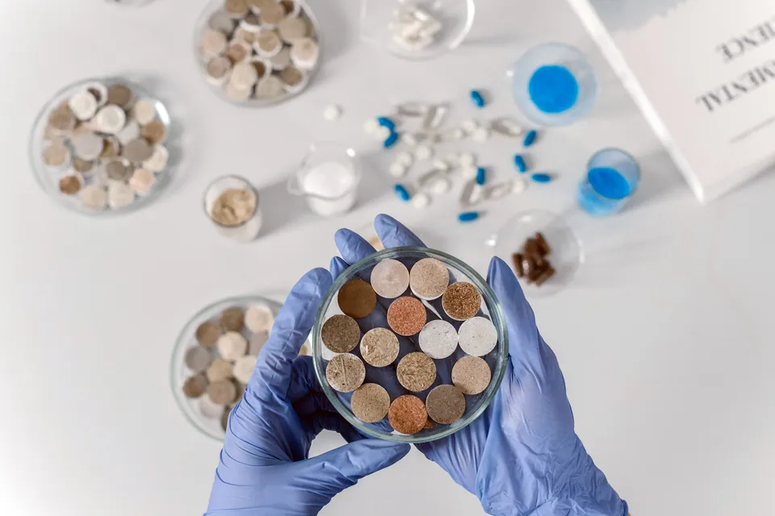
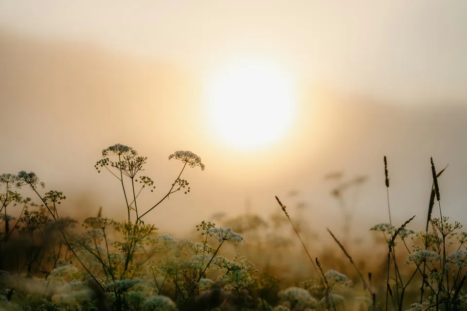

Partners & Collaborations
Rigorous analytical chemistry and residue testing at ICCBS
Overview & partnership context
AgReCir partners with the International Center for Chemical and Biological Sciences (ICCBS) at the University of Karachi to perform advanced laboratory testing of soil, water, and crop samples for certification compliance.
The International Center for Chemical and Biological Sciences (ICCBS) is a premier UNESCO Category 2 Centre of Excellence and one of the finest chemical research institutions in the developing world. Housing state-of-the-art analytical facilities, ICCBS sets the gold standard for chemical testing in Pakistan.
In certified organic and regenerative agriculture, external accreditation bodies demand unequivocal laboratory proof that crops, soil, and irrigation water are free from banned synthetic pesticides, herbicides, and toxic heavy metals. ICCBS provides the independent, ISO 17025 accredited chemical validation that underpins AgReCir's field programmes.
Key areas of collaboration
- Multi-residue pesticide screeningAdvanced GC-MS/MS and LC-MS/MS screening against global pesticide libraries to verify zero chemical residues in harvest samples.
- Heavy metal & water contamination testingInductively Coupled Plasma (ICP) testing of groundwater and canal supplies to detect arsenic, lead, and industrial effluent traces.
- Aflatoxin & microbial validationAssaying post-harvest chili, rice, and date samples to ensure aflatoxins and microbial contaminants remain far below international safety thresholds.
- Bio-input compositional analysisTesting on-farm composts, bio-slurries, and botanical extracts to measure active nutrient profiles and ensure freedom from synthetic additives.
Deliverables and fieldwork impact
Unimpeachable laboratory certificates of analysis providing corporate buyers, certifiers, and regulatory authorities with absolute confidence in farm-level purity.

Looking to partner with AgReCir?
We work with brands, industrial processors, governments, and academic institutions across Pakistan and partner countries.